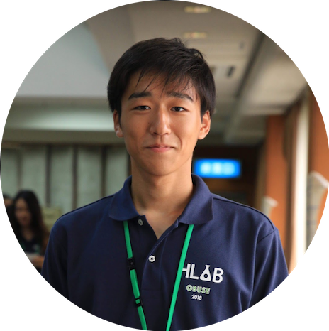
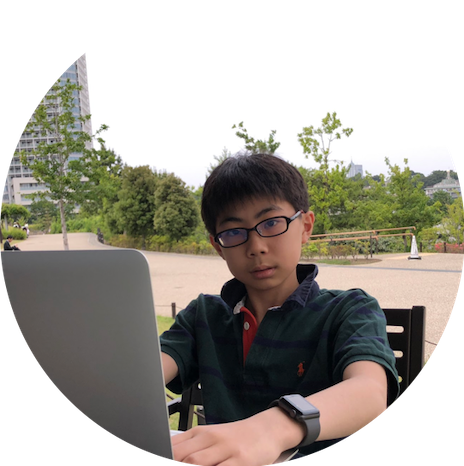

私たちは、「鳥人間コンテスト2019」への出場を通して、それぞれの想いを体現しようとしているチームです。
2018年に結成され、メンバーは孫正義育英財団生有志で構成されています。
このページでは、より応援していただけるように、メンバーや各班リーダーの想いをご紹介しております。
リーダーたちの想い
孫正義育英財団の1期生となった2017年7月から、多様な分野で活躍する財団生たちと出会い、彼ら彼女らから幾度となく刺激を受け、その度に心が躍った。それと同時に、「ここで出会った仲間たちと何か面白いことができないものか」と考えるようになっていた。
そんな中、偶然テレビで「鳥人間コンテスト2018」を見かけた。そこには、参加チームそれぞれの熱いストーリーがあった。私もかけがえのない仲間たちと空を目指し、唯一無二のストーリーを作りたい。そう思った瞬間、財団生たちの顔が頭に浮かんだ。空を目指せる仲間がいた。そうして、このチームは発足した。
私たち「孫正義育英財団 Thunderbirds」は、この夏、琵琶湖で「空を飛ぶこと」に本気で挑戦します。
僕の成し遂げたい志は、ドラえもんをつくること。小学生の頃からその思いをずっと持ち続けてきた。
僕は空を飛びたいと思ったことはなかった。いきなり訳も分からず「やってくれ」と言われ、当初はピンとこず、本気で言っているのかと探り探りだった。振り返ればあの頃は、財団の全員がお互いに探り探りだった。自分だけやる気になって、周りがついてこなかったらやるせない。そんな感じがしていた。
でも、ある時なぜだかわからないが、僕はこう思った。
「自分が先陣を切って本気になって、その本気さでみんなを本気にしよう。」
僕が自転車を漕いで、プロペラが回って、飛行機の動力を生んで飛ぶのではなく、僕が自転車を漕ぐ本気さで、人が回って、チームの動力を生んで空を飛ぶ。そんなことができたら、ドラえもんをつくる最大の武器を手に入れられる気がしたのだ。
頭で思い描く「アイデア」や形を持たない「かたち」、これらに「形」を与え、マテリアリティを帯びた「もの」として現実世界に呼び出す「ものづくり」という営みは、強大な「力」である。人が望むありようにリアルを改変するこの営為は、その強大さゆえときに暴力ともなり得る。
この「力」がもつ可能性は果てしない。その強大さを飼いならしたとき、幾億年の進化の過程を一足飛びに、人は空をも飛べてしまうのだから。
その計り知れない強大さに、尻込みしてしまう
こともある。しかし、一人ではとても手に負えないようなこの「力」にも、共に歩む仲間がいれば、立ち向かえるかもしれない。心から信頼できる仲間の存在こそが、その暴力性に飲み込まれないための大きな希望である。
孫正義育英財団という場所で最高の仲間と巡り合った私は、彼ら彼女らと共にこの「力」に挑むことを決めた。
メンバー紹介
パイロット班
リスク管理班
設計班
電装班

広報班
-

谷澤 文礼
広報班リーダー
-

大塚 嶺
Wサイト作成
・管理 -
七條 ありさ
チームマネジメント
/広報戦略策定 -
久保田 しおん
広報戦略策定
-
徐 亜斗香
告知・
プロモーション -

佐藤 和音
ブログ執筆
/SNS担当
組立班
公益財団法人 孫正義育英財団が運営する公式サイトではありません。孫正義育英財団生個人の取り組みとして、財団生が運営するサイトです。